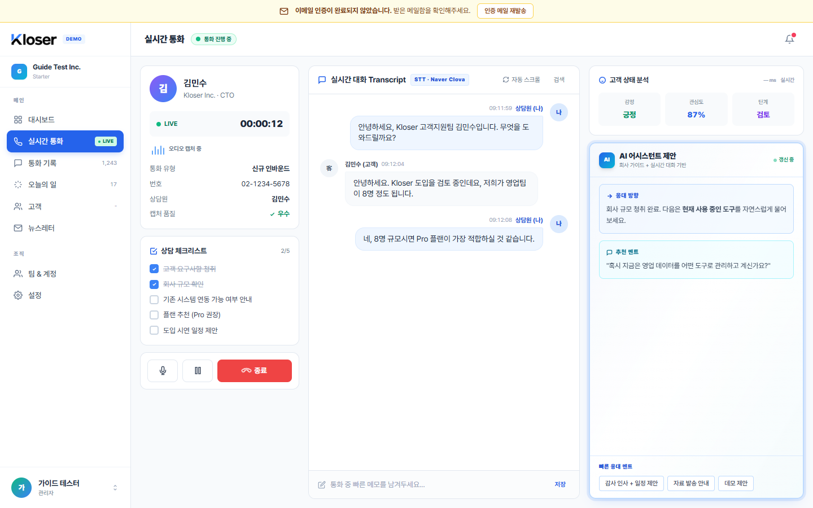
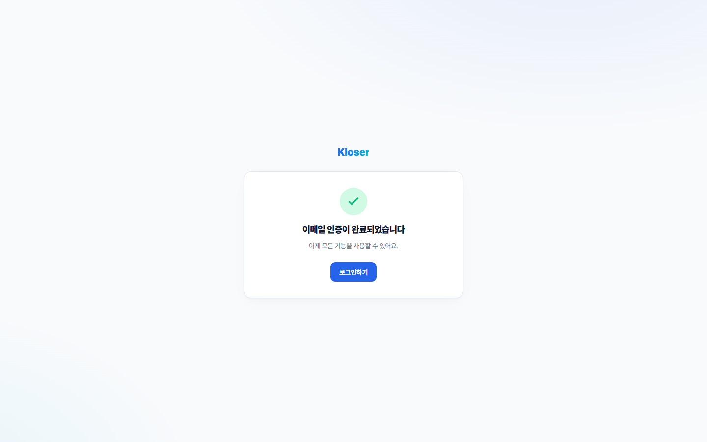
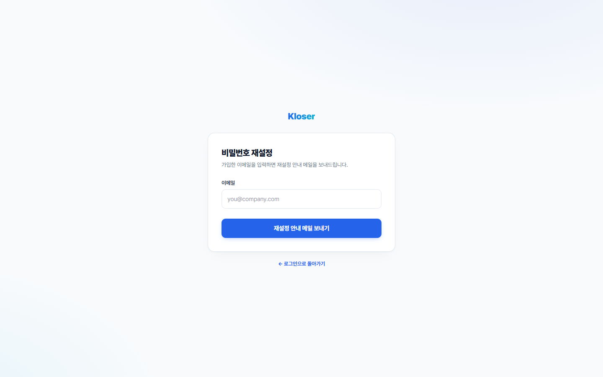
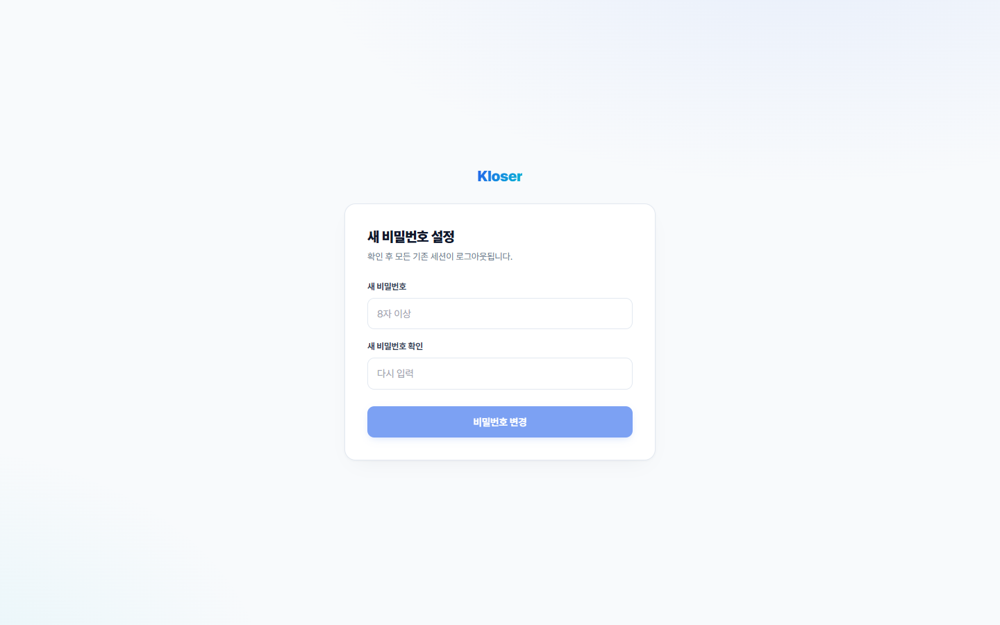
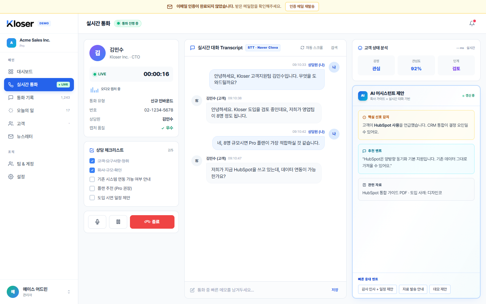

기둥 01
직접 회원가입 — 네 가지가 한 번에 만들어집니다
가입 화면에서 이름·이메일·비밀번호·회사 이름을 입력하면 아래 네 가지가 한꺼번에 만들어집니다. 하나라도 실패하면 모두 없던 일이 되어 절반만 만들어지는 상태가 생기지 않습니다. 가입이 끝나면 본인 회사의 첫 관리자 자격으로 곧바로 로그인된 상태가 됩니다.
한 번의 가입으로 생기는 네 가지
1
회사 생성
입력한 이름으로 새 회사 공간이 만들어집니다.
2
계정 생성
비밀번호는 다시 읽을 수 없는 형태로 변환되어 저장됩니다.
3
관리자 자격 부여
가입한 사람이 이 회사의 첫 관리자가 됩니다.
4
인증 메일 발송
이메일 인증용 링크를 메일로 보냅니다 (24시간 안에 클릭).
가입 직후 바로 사용 가능
가입이 끝나면 별도 로그인 없이 곧장 서비스 화면으로 이동합니다. 이메일 인증이 아직 안 됐을 땐 화면 위 노란 띠로 알려주며, 동료 초대 같은 작업의 실제 차단은 다음 Phase에서 켜질 예정입니다.
이미 가입된 이메일이면
"이미 가입돼 있는 이메일이에요" 안내가 뜨고 가입이 진행되지 않습니다. 의도된 안내입니다 — 사용자가 헷갈리지 않고 바로 로그인 화면으로 가도록 돕습니다.

기둥 02
이메일 인증 — 링크 한 번이면 끝, 코드는 주소창에 안 남습니다
받은 메일 안의 링크를 누르면 인증 페이지가 열립니다. 페이지가 열리는 그 순간 주소창에 있던 인증 코드가 자동으로 지워집니다 — 북마크에 저장하거나 다른 사이트로 이동해도 그 코드는 따라가지 않습니다. 인증이 끝나면 화면 위 노란 띠도 사라집니다.
메일 링크를 누른 직후 주소창 변화
아직 인증 안 됐을 때 보이는 상단 띠
코드가 새 나가지 않게
주소창에서 즉시 지워지고, 다른 사이트로 이동할 때도 그 코드가 따라가지 않도록 막혀 있습니다. 북마크나 채팅에 잘못 붙여 넣어도 위험이 없습니다.
한 번 쓰면 끝
같은 링크를 다시 눌러도 두 번째부터는 안 됩니다. 24시간 안에 사용하지 않은 링크도 마찬가지로 만료됩니다 — 그 경우 메일을 재발송 받으면 됩니다.
이미 인증된 경우
다른 탭에서 이미 인증을 끝낸 뒤 재발송 버튼을 눌렀다면, "이미 인증된 계정이에요" 안내가 잠깐 뜨고 상단 띠도 같이 사라집니다.


기둥 03
비밀번호를 잊었다면 — 본인이 직접 다시 설정합니다
로그인 화면의 "비밀번호 분실?"을 누르고 이메일을 입력하면, 메일로 다시 설정용 링크가 옵니다. 링크 안에서 새 비밀번호를 정하는 순간, 같은 계정으로 다른 기기·다른 탭에 로그인돼 있던 모든 세션이 자동으로 끊깁니다. 만약 다른 사람이 몰래 로그인해 있었다면 그 사람도 이 순간 튕겨 나갑니다.
이메일이 가입돼 있는지 외부에서 알 수 없습니다
가입된 이메일
"메일을 보냈어요"
실제로 다시 설정용 링크가 발송됩니다.
가입되지 않은 이메일
"메일을 보냈어요"
실제로는 아무 메일도 안 가지만, 화면 안내는 정확히 같습니다.
두 경우에 화면·응답·기다리는 시간이 모두 같으므로, "이 이메일이 우리 회사에 가입돼 있나?"를 외부에서 추측하는 것이 불가능합니다.
새 비밀번호를 정한 직후 일어나는 일
- 즉시 새 비밀번호가 저장됩니다. 가입 때와 똑같이 다시 읽을 수 없는 형태로 변환되어 보관됩니다.
- 즉시 다른 기기·다른 탭의 로그인이 모두 끊깁니다. 그 화면에서 다음 동작을 하려고 하면 다시 로그인을 요구합니다.
- 즉시 메일 링크는 더 이상 안 됩니다. 한 번 쓴 링크를 다시 누르거나 1시간 안에 안 쓴 링크는 모두 만료입니다.
- ~15분 이미 진행 중인 화면 작업은 최대 15분 안에 끊깁니다. 다른 기기에 띄워 둔 화면이 곧장 다음 요청에서 막히지는 않지만, 짧은 시간 안에 자동으로 차단됩니다.


기둥 04
동료 초대 — 메일 한 통이면 합류 끝
관리자가 팀 화면에서 이메일·이름·역할(필요하면 팀)을 정해 초대를 보내면, 받은 사람에게 메일이 갑니다. 받은 사람은 먼저 로그인하지 않고도 메일 안의 링크 한 번으로 가입을 끝냅니다. 초대 링크는 7일 동안 유효합니다.
초대 보내기 → 메일 도착 → 받은 사람 클릭 → 멤버 합류
1 · 관리자
초대 보내기
받을 사람의 이메일·역할·소속 팀(선택)을 입력하고 "보내기".
2 · 메일 도착
초대 메일 발송
"○○회사에 합류하시려면 여기를 누르세요" 형식의 링크가 포함된 메일이 갑니다.
3 · 받은 사람
링크 클릭
로그인 없이 페이지가 열리고, 이름·비밀번호만 입력하면 끝.
4 · 합류 완료
멤버 목록에 등장
받은 사람은 자동 로그인되어 화면이 열리고, 관리자 쪽 멤버 목록에도 새 이름이 나타납니다.
이미 다른 회사에 계정이 있어도 OK
받은 사람이 이미 Kloser를 다른 회사 계정으로 쓰고 있다면, 새 계정을 또 만들지 않고 기존 계정에 새 회사 소속만 추가합니다. 다음 로그인 때 어느 회사로 들어갈지 묻는 화면이 나옵니다.
이메일 인증 처리
처음 가입하는 사람은 자동으로 인증 완료 처리됩니다 — 메일이 실제로 닿았고 토큰을 통과한 것 자체가 이메일 소유 증명이므로. 이미 다른 회사 계정이 있는 사람은 기존 인증 상태가 그대로 유지됩니다 (인증돼 있었으면 그대로, 안 돼 있었으면 안 된 상태로).
같은 사람에게 초대를 두 번 보내려고 하면
초대를 다시 보내거나 취소할 때
다시 보내기
새 링크가 발송됩니다. 이전 메일의 옛 링크는 그 즉시 작동을 멈추므로, 받은 사람이 옛 메일을 잘못 누를 일이 없습니다.
취소
취소 즉시 그 링크는 더 이상 작동하지 않습니다. 화면 목록에서는 사라지지만 이력은 시스템 내부에 보존됩니다.

기둥 05
멤버·역할 관리 — 바꾸고 잠그되, 관리자 0명은 막습니다
관리자는 멤버의 역할을 바꾸거나 계정을 잠글 수 있습니다. 잠그는 것은 완전 삭제가 아닌 "사용 중지"라서 그 사람이 이전에 만들어둔 자료(고객·통화 기록 등)는 그대로 남고 이력도 보존됩니다. 그리고 회사에 관리자가 0명이 되는 일은 시스템이 직접 막습니다.
역할별로 가능한 일 (Phase 3 시점)
관리자 0명 사고 방지
회사에 관리자가 1명만 남은 상태
본인을 강등하거나 잠그려 하면
방금 권한이 바뀐 사람의 옛 화면도 자동으로 차단
어떤 관리자의 권한이 방금 바뀌었는데 그 사람이 다른 탭에 옛 화면을 띄워 두고 명령을 보내려고 하면, 시스템이 그 명령을 받기 전에 "권한이 바뀌었으니 다시 로그인해 주세요"로 막습니다. 관리자만 할 수 있는 작업(역할 변경 / 계정 잠금 / 팀 관리 / 초대 발송·재발송·취소)에 적용됩니다.
- "방금 강등됐는데 옛 화면으로 명령을 보내는" 경우를 막습니다.
- 비밀번호 분실 복구·초대 수락처럼 로그인 없이 진행되는 흐름은 이 검사 대상이 아닙니다 (애초에 옛 권한 정보가 따라오지 않으므로).
사이드바 프로필이 실제 계정 정보로 채워집니다
모든 로그인 페이지의 좌측 사이드바는 정적 데모 이름이 아니라 본인의 현재 세션 기준으로 채워집니다 — 상단 카드는 소속 조직 이름 + 플랜 라벨, 하단 버튼은 본인 이름 + 한국어 역할 라벨. 다른 조직으로 다시 로그인하면 즉시 그 조직 정보로 바뀝니다.
상단 카드
조직 이름 + Starter / Pro / Enterprise 중 하나의 플랜 라벨.
하단 버튼
본인 이름 + 관리자 / 매니저 / 직원 / 조회 중 하나의 한국어 역할 라벨. 이름이 비어 있으면 이메일 앞부분이 fallback.

Acme Sales Inc. / Pro), 좌측 하단 프로필 버튼은 본인 이름 + 역할(에이스 어드민 / 관리자). 이 두 자리는 모든 로그인 페이지의 사이드바에서 동일하게 채워집니다.
보안
메일에 들어가는 코드는 시스템에 그대로 저장되지 않습니다
이메일 인증·비밀번호 분실·초대 — 이 세 흐름 모두 메일에 긴 무작위 코드가 담긴 링크를 보냅니다. 이 코드는 한 방향으로 변환된 형태로만 보관되기 때문에, 만약 시스템 자료가 통째로 유출되어도 그 코드가 그대로 도용되지는 않습니다. 그리고 한 번 사용된 코드는 다시 쓰지 못합니다.
메일 코드의 일생
이메일 인증 링크
24시간 안에 클릭 — 가입 직후 곧장 누른다고 가정한 시간입니다.
비밀번호 분실 링크
1시간 안에 사용 — 분실은 보통 즉시 처리하는 흐름입니다.
초대 링크
7일 안에 합류 — 휴가·주말을 고려한 시간입니다.
범위
지금 되는 것 / 아직 안 되는 것
Phase 3은 직접 가입·초대 흐름을 연 단계입니다. 화면에서 즉시 동작하는 부분과 다음 Phase로 미뤄둔 부분을 명확히 구분합니다.
| 기능 | 현재 | 예정 |
|---|---|---|
| 직접 회원가입 (새 회사 + 관리자) | ✓ 새 동작 | — |
| 이메일 인증 · 재발송 · 상단 알림 띠 | ✓ 새 동작 | 모든 화면에 띠 적용은 다음 Phase |
| 비밀번호 분실 복구 + 다른 기기 자동 로그아웃 | ✓ 새 동작 | — |
| 동료 초대 (보내기 / 수락 / 다시 보내기 / 취소) | ✓ 새 동작 | — |
| 멤버 역할 변경 · 계정 잠금 | ✓ 새 동작 | — |
| 관리자 0명 사고 방지 | ✓ 동작 | — |
| 이메일 가입 여부 외부 추측 불가 | ✓ 동작 | 발송량 제한은 운영 진입 단계 |
| 실제 외부 메일 발송 (Gmail·Outlook으로) | ⌛ 평가용 보관함 | 운영 진입 단계 |
| 미인증 사용자가 동료 초대를 못 보내게 막기 | ⌛ 알림만 | 다음 Phase에서 실제 차단 |
| 화면에서 직접 팀 만들기·수정·삭제 | ⌛ 일부만 | 다음 Phase |
| 매니저·직원의 세분화된 권한 | ⌛ 관리자만 | 다음 Phase |
| 2단계 인증 (OTP / 생체 인증) | ⌛ 미구현 | 운영 진입 단계 |
| 엑셀 파일로 한 번에 여러 명 초대 | ⌛ 미구현 | 엔터프라이즈 단계 |
| 사이드바의 사용자 정보를 실제 계정 정보로 표시 | ✓ 동작 | — |
Phase 3이 만든 약속들(직접 가입·인증·복구·초대·역할 관리·관리자 보호·코드 안전 보관·외부 추측 차단)은 다음 Phase에서 추가될 기능들에도 그대로 적용됩니다.
자동 검사
다음 변경이 위 약속을 깨지 않도록 — 자동으로 매번 확인
Phase 3에서 만든 약속들은 코드 변경이 있을 때마다 자동으로 검사됩니다. 아래 다섯 가지가 모두 통과해야만 합격으로 인정됩니다.
155 / 155
서버 기능 검사
로그인 · 토큰 · 팀 · 초대 · 회사별 분리 · 권한
33 / 33
전체 흐름 검사
가입 → 인증 → 초대 → 수락 → 역할 변경 → 잠금
7 / 7
고객 흐름 (회귀)
Phase 2의 약속이 깨지지 않았는지
16 / 16
통화 흐름 (회귀)
Phase 1의 약속이 깨지지 않았는지
PASS
입력 형식 일치
화면과 서버가 같은 입력 규칙을 따르는지
참고 — 기술 관심자용
기술 요약
이 섹션은 보안·아키텍처에 관심 있는 분이 핵심 결정 사항을 한눈에 보기 위한 부분입니다. 앞 섹션들은 이 용어를 몰라도 이해할 수 있도록 작성했으니, 이 부분은 가볍게 건너뛰셔도 됩니다.
신규 스키마 5 migration
auth_tokens (purpose enum 통합) +
email_outbox +
invitations enrich +
memberships.status CHECK + grant 보강. forward-only.
토큰 보관 정책
token_hash는 sha256(hex)만. raw는 mint 시점 1회 반환 후 폐기.
email_outbox에는 dev 한정으로 raw가 본문에 포함 (e2e 추출용).
익명 흐름 service role
kloser_service (BYPASSRLS, SELECT/INSERT/UPDATE만 - DELETE 없음).
verify / reset / accept 3 endpoint가 사용. 일상 흐름 app role과 분리.
lock 순서
invitations → auth_tokens 통일.
accept 트랜잭션: findTokenByRaw → invitations FOR UPDATE →
lockAndValidateTokenById → ... → markTokenConsumed.
마지막 admin 보호
lockActiveAdminIds(client) — active admin row 집합 lock + 변경 시뮬레이션.
ORDER BY id로 동시 mutator 직렬화 + deadlock 방지.
requireFreshRole
admin-only mutation 4종(role / status / team CRUD / 초대 생성·재발송·취소)에 적용.
DB 현재 role + JWT claim 비교 → 불일치 시 401 stale_role.
client URL 누출 차단
verify / reset / accept 3 page 진입 즉시 history.replaceState(null,'',pathname) +
<meta name="referrer" content="no-referrer">.
자동 회귀
npm --prefix server test 155/155 +
sync_shared_types (5 entity) +
phase_0_5_e2e 16/16 +
phase_2_customers_e2e 7/7 +
phase_3_e2e 33/33.
Phase 1·2 기반이 궁금하면 PHASE_1_FOUNDATIONS / PHASE_2_FOUNDATIONS 에 있습니다.